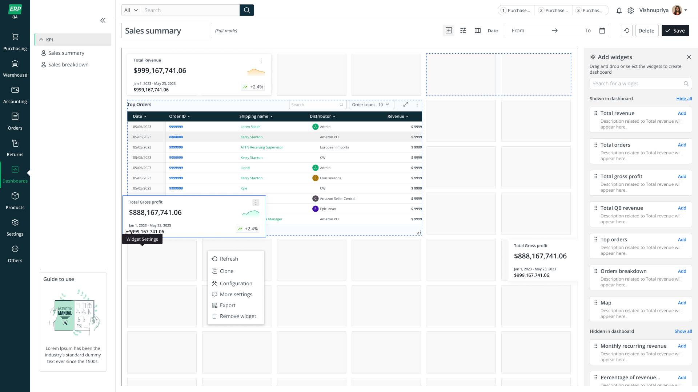
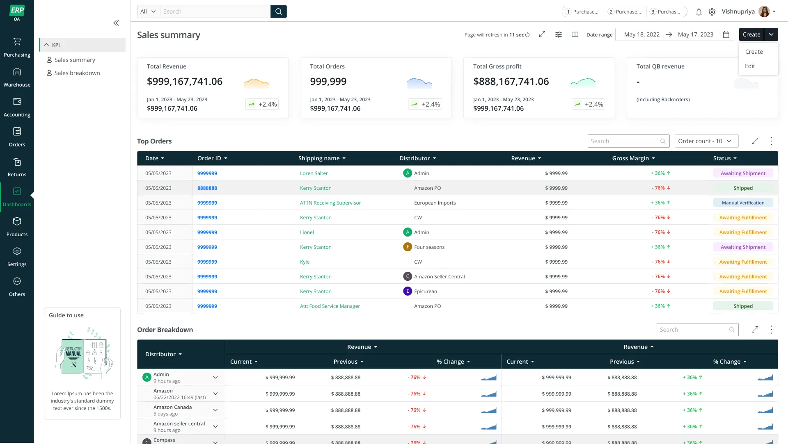
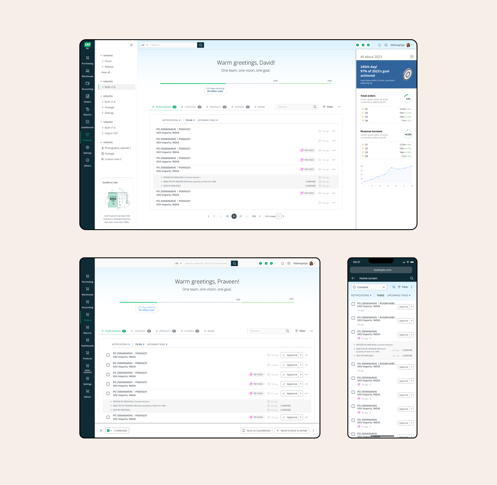

The Dashboard, scheduled jobs, home page and other core module experiences across ERP Suite 3.0.
Module highlight
A new role-based, widget-driven dashboard with drag-and-drop widgets, custom metrics and real-time previews — and an internal task management system, inspired by tools like Asana but built for ERP approval workflows.


